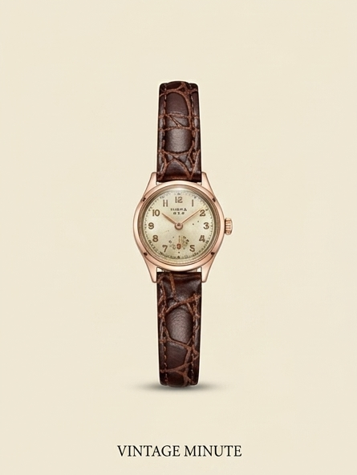
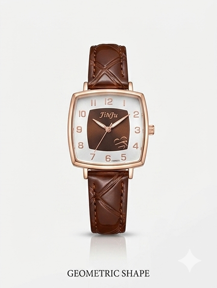

Proyectos Terminados

Restauración Vintage
Limpieza profunda y recuperación estética completa.

Cambio de Correa Premium
Instalación profesional y ajuste preciso.

Mantención de Lujo
Servicio completo para relojes de alta gama.

Reparación Completa
Ajuste interno y renovación exterior profesional.